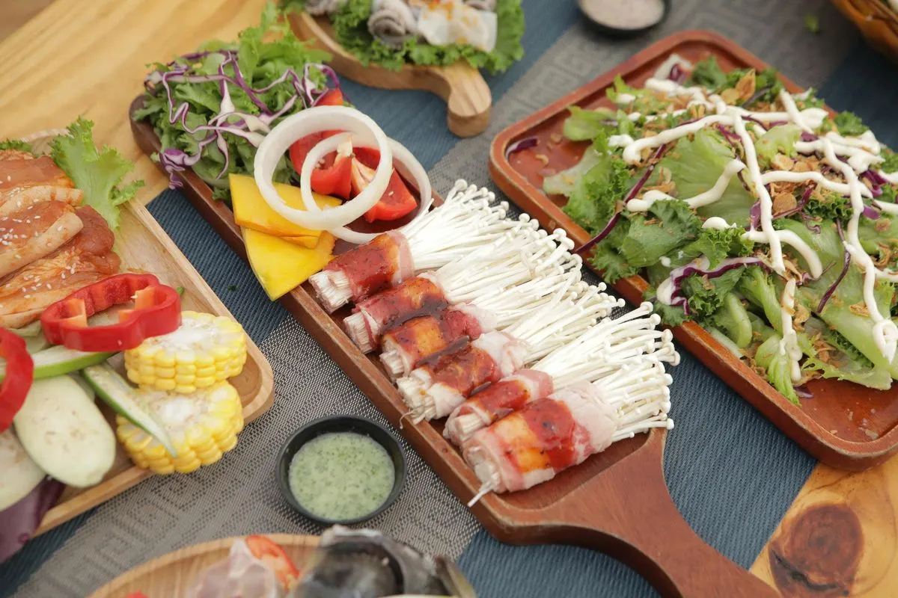

Tết ở Đà Lạt — mùa cao điểm của cả thành phố
Tết Nguyên Đán là một trong những dịp đông khách nhất năm của Đà Lạt. Khách sạn kín sớm, đường vào các điểm tham quan đông, và chuyện ăn uống — vốn ngày thường rất dễ — bỗng thành thứ phải tính trước. Không ít nhóm đi Tết mà không đặt bàn trước đã phải đi lòng vòng vài chỗ rồi cuối cùng ăn tạm.
Có hai lý do khiến Tết khó hơn ngày thường. Một là khách tăng. Hai là nguồn cung giảm — nhiều quán cho nhân viên nghỉ Tết nên đóng cửa hoặc mở rút gọn. Hai thứ cộng lại nên phải chủ động từ sớm.
Làm sao biết quán nào mở dịp Tết?
Đây là chỗ nhiều người mắc lỗi nhất: tin vào giờ mở cửa mặc định trên bản đồ. Giờ đó là giờ ngày thường, gần như không phản ánh lịch Tết. Cách kiểm cho chắc:
- Gọi trực tiếp và hỏi từng ngày. Đừng hỏi "Tết có mở không" mà hỏi "mùng 2 quán có mở không, từ mấy giờ". Nhiều quán mở cách ngày hoặc mở muộn hơn thường lệ.
- Đọc bài đăng mới nhất trên trang của quán. Lịch Tết thường được thông báo ở bài đăng chứ ít khi sửa vào phần thông tin cố định.
- Hỏi lại lần hai trước ngày đi. Lịch Tết có thể đổi sát ngày tùy tình hình nhân sự.
- Luôn có phương án hai. Chọn sẵn hai chỗ thay vì một. Dịp Tết, chỗ dự phòng là thứ đáng giá nhất.
Còn Trạm Dừng Chill thì nói rõ luôn: quán không mở xuyên Tết. Muốn biết chính xác quán nghỉ ngày nào và mở lại từ mùng mấy, gọi 0989.765.070 hỏi trực tiếp — đây là thông tin thay đổi theo từng năm nên không nên đoán. Đặt bàn tại đây →
Đặt bàn Tết thế nào cho hiệu quả
Đặt trước 2 đến 4 tuần. Ngày thường đặt trước một hai hôm là đủ, nhưng Tết thì càng sớm càng chắc. Đặt sớm cũng dễ đổi lịch hơn là đặt muộn rồi hết chỗ.
Hỏi rõ về đặt cọc. Một số nơi yêu cầu cọc trong dịp cao điểm, một số thì không. Nếu có cọc, hỏi ba ý: cọc bao nhiêu, cọc được trừ vào hóa đơn hay không, và hủy trước bao lâu thì được hoàn. Hỏi trước tránh tranh cãi sau.
Hỏi về phụ thu ngày lễ. Một số quán có phụ thu dịp Tết. Hỏi luôn giá đã gồm VAT chưa để tính tiền cho đúng.
Hỏi quán giữ bàn trong bao lâu. Ngày cao điểm, quán thường chỉ giữ bàn một khoảng thời gian nhất định rồi trả lại cho khách khác. Biết con số cụ thể thì bạn canh giờ đi cho vừa.
Xác nhận lại trước một đến hai ngày. Một tin nhắn hoặc cuộc gọi ngắn. Đây là bước hay bị bỏ qua nhất và cũng là bước cứu được nhiều bữa ăn nhất.
Nói trước số người thật. Đi 8 người mà đặt bàn 4 rồi tính ghép thêm tại chỗ là kịch bản dễ hỏng nhất trong ngày đông khách.
Đừng kỳ vọng chắc chắn có bàn view. Nhiều quán, trong đó có Trạm Dừng Chill, không nhận giữ riêng bàn view. Đặt bàn là để chắc có chỗ ngồi, còn vị trí đẹp thì tùy lúc bạn tới.
Gợi ý gọi món cho bữa Tết đông người
Với gia đình 4 đến 6 người ở Trạm Dừng Chill, một cách xếp bữa cân đối: Ba Chỉ Bò Nướng Muối Tiêu 155K, Tôm Nướng Muối Ớt 150K, Cánh Gà Nướng Muối Ớt 130K, Rau Thêm 20K, cộng một nồi Lẩu Gà Lá É 300K cho ấm bụng giữa trời lạnh. Quán gọi món lẻ, không buffet và không combo cố định, nên bạn tự cân số lượng theo sức ăn của nhà mình. Muốn thêm không khí sum vầy thì gọi chai Rượu Vang Classic 750ml 190K. Xem menu đầy đủ để chốt trước cho nhanh.

Vài lưu ý nhỏ khi đi ăn dịp Tết: mang áo khoác dày vì Đà Lạt lạnh sâu hơn vào đầu năm; đi ô tô thì hỏi trước chỗ đỗ, riêng Trạm Dừng Chill có bãi miễn phí cho xe máy và ô tô con; và mang theo phương án thanh toán chuyển khoản hoặc QR để đỡ phải lo tiền mặt trong mấy ngày Tết.
Kết luận
Đặt bàn quán nướng Đà Lạt Tết 2027 không khó, chỉ cần làm sớm và hỏi đúng bốn thứ: quán có mở ngày đó không, có cọc không, có phụ thu không, giữ bàn bao lâu. Làm xong bốn việc đó thì bữa đầu năm của cả nhà coi như đã yên. Với Trạm Dừng Chill, gọi 0989.765.070 để hỏi lịch mở cửa dịp Tết, hoặc đặt bàn trước tại đây.